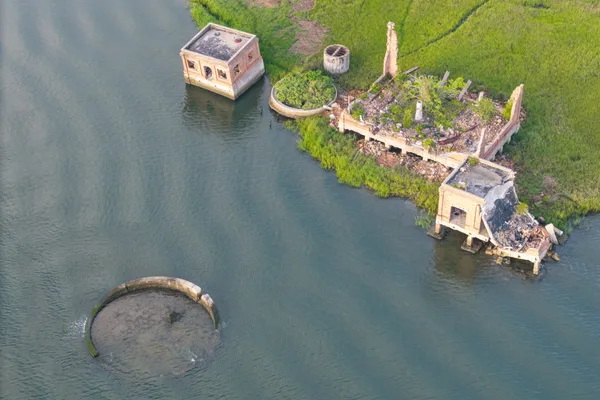
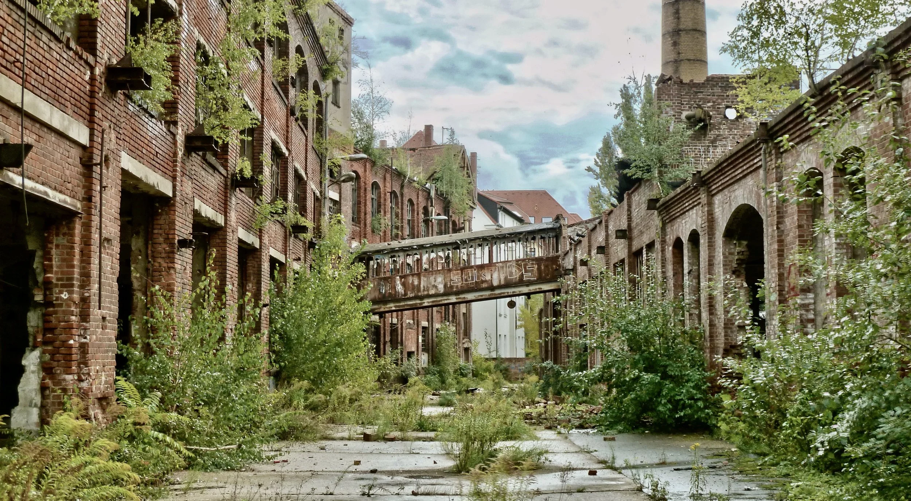

// Gallery
These images show some of the different things that can be found while exploring abandoned locations. Old buildings, empty rooms, and objects left behind can give an idea of what these places were like before they were abandoned.

Plants and harsh weather left a once beautiful greenhouse located in Belgium, Germany in shambles.

Flooding and years of decay destroyed this coal terminal located in Charleston, South Carolina, which lead to it shutting down in 1952.
